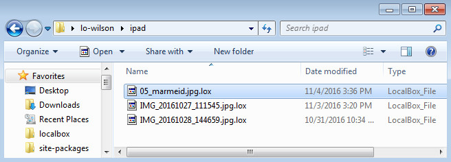

User Manual¶
Windows Installation¶
Execute the installer (eg. LocalBoxInstaller.exe)
- Agree to the EUPL [I Agree]
- choose a different directory to install (optional) or choose the default install folder.
- Choose [Install] You can also choose [More details] for monitoring the installation.
- Possible there is a message that there is a installation of the software found: ‘A prior wxPython installation was found in this directory. It is recommended that it be uninstalled first. Should I do it?’ Answer: is [Yes].
- Wait for the installer starts PyCrypto-xxx —> push or click [Next >] [Next >] [Next >] {Finish}
- Wait for the installer starts LocalboxSync-xxx start. push or click [Next >] [Next >] [Next >] {Finish}
- If all goes well there is a completed window, and you can than click [Close]
- Reboot or not (yep... it’s Windows) or try to start the program, and you see in the taskbar a new localbox icon
Ubuntu Installation¶
Download: http://software.yourlocalbox.org/clients/Ubuntu/
Install the mime type:
sudo xdg-mime install --mode system /usr/localbox/x-localbox.xml
Run:
sudo xdg-mime default localbox.desktop application/x-localbox
xdg-icon-resource install --size 32 --context mimetypes /usr/localbox/localbox.png application-x-localbox
xdg-icon-resource install --size 48 --context mimetypes /usr/localbox/localbox.png application-x-localbox
xdg-icon-resource install --size 64 --context mimetypes /usr/localbox/localbox.png application-x-localbox
Explaining LocalBox¶
The LocalBox user can setup a directory on his computer to be stored securely on a remote server. Using the same account the user can synchronize the same files with other devices / computers. Each user has his own LocalBox directory on the server. All the files inside this directory are encrypted. When the files are downloaded to the computer they are encrypted. When the file are uploaded to the server they are encrypted.

Creating your first localbox¶
This document provides guidelines on how to test the YourLocalBox sync client.
Look in the “Start menu” for the LocalBox sync link

It opens directly to tray,

Here is the main interface

Get started using the “Add” button

Description of the inputs: * Label: An identifier for of the sync / localbox. Don’t use special characters in it. * URL: address of the YourLocalBox backend server. Just type: https://box.yourlocalbox.org * Path: path to the directory on your computer whose contents will be uploaded and synced to the remote server. Use the “Select” button to choose one.
On the next step, you’ll be asked for your credentials. For a new account send an e-mail to: wilson.santos@penguinformula.com

As a final step you must provide a passphrase. This will be used to encrypt / decrypt your files. The security of the files depends on the complexity of this passphrase.

That’s it! Now it’s time to add a file to your localbox.

By default the syncing progress only runs once an hour so feel free to use the “Force sync” option on the tray icon.

and… we are done! The files are up in the serve
Syncing your files¶
To sync your files, place them inside the directory you configured as your localbox. The syncing process periodically, but you can force it by right-clicking the tray icon and selecting ‘Force sync’.

If you wish, you are able to stop the syncing at any time:

Securing your files¶
Your files are stored encrypted on the server. The client downloads the files and stores them locally also encrypted.
If the client is running (see the tray icon?), then it already knows the passphrase and will decrypt and open the file when you try open it.
If the client is not running, it will ask you the passphrase to access the file.

After that your file will be opened with the default application.
When the files are uploaded to the server, the original unencrypted files are locally deleted. The files that the client decrypts can also be deleted by selecting the option ‘Delete decrypted files’ after right-clicking the tray icon.

Sharing your files¶
Since version 1.6.1
In the tab “Shares” is a list of all the shares for all the configured LocalBoxes

- Label is the identifier of the configured LocalBox (same as in the Syncs tab)
- User is the name of the user that created the share
- Path is the directory being shared. It is relative to the root of the LocalBox directory (that’s why is represented as /ABC)
- URL is address to the LocalBox backend
This allows the creator to manage his shares. The person who receives a share is called a “receiver”. The receiver will see the new files in his LocalBox, but won’t see the share listed in his “Shares” tab. The receiver can read and write files in the share folder.
The operations available are: add and remove shares.
Add new share¶
To create a new share:
- Select which LocalBox the share created in.
- Then select which directory inside your LocalBox you will be sharing.
- And finally select a list of users to share with.

File sharing limitations¶
- All users in the share have read/write permissions.
- The share is not editable. You cannot add / remove people from the share.
- Removing a share also means removing the files (for all users involved, including the owner).
- Only can share folders that already exits in LocalBox. This means that the user must previously sync the folder, then he can share it with other users.